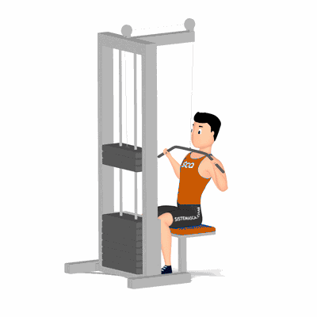

Pulley Frente

Exercício para fortalecimento e hipertrofia da região das dorsais, abrange também, músculos auxiliares, tais como, trapézio e bíceps braquial. Realiza no aparelho. Indicado a praticante de musculação nível iniciante ao avançado.
Ficha Técnica
Tipo: Musculação
Grupo Muscular: Costas
Aparelho: Nenhum
Músculos: Nenhum
Como realizar
- Segure a barra com as palmas das mãos voltadas para a frente (pegada pronada);
- O afastamento entre as mãos deverá ser um pouco maior do que a largura dos ombros;
- Incline o tronco levemente para trás;
- Puxe a barra em direção a parte superior do peitoral, até a altura do peito;
- Retorne a barra à posição inicial sem estender os braços, mantendo a tensão nos músculos da grande dorsal.
 RC STORE
RC STORE